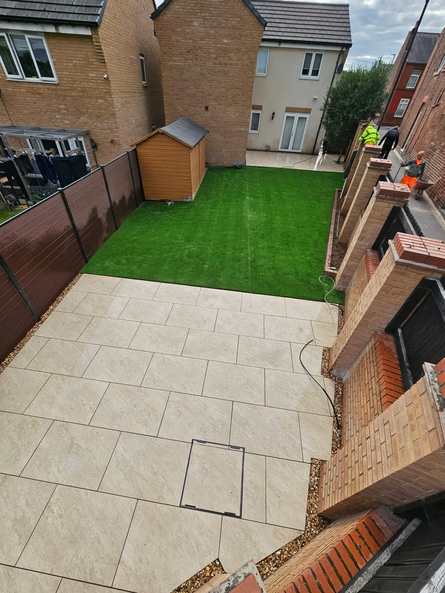

NSG DRIVEWAYS · OUTDOOR SPACES
Fencing, walls & drainage.
The details that make it work.
NSG DRIVEWAYS LTD
Designed around your property.
Boundaries, garden walls and drainage all shape the way an outdoor space works. Discuss fencing, raised borders, level changes and water management as part of a standalone project or a wider garden transformation.
Send a few photographs, approximate dimensions and your postcode to start the conversation.
Discuss your project →OUR PROJECTS
Fencing, walls & drainage projects.
Select a photograph for a larger view.
FREE, NO-OBLIGATION QUOTE
Let’s talk about your outdoor space.
Tell us what you have in mind. This form prepares a WhatsApp draft with all your details. You review it before sending.